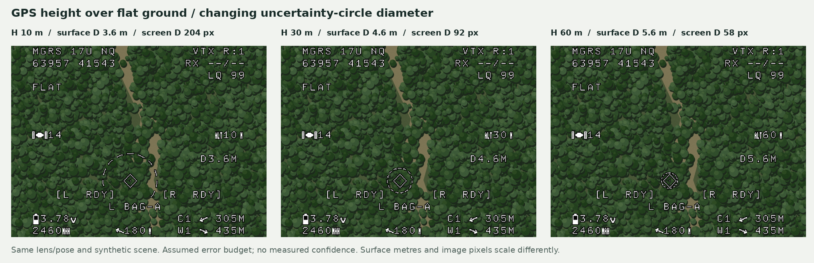
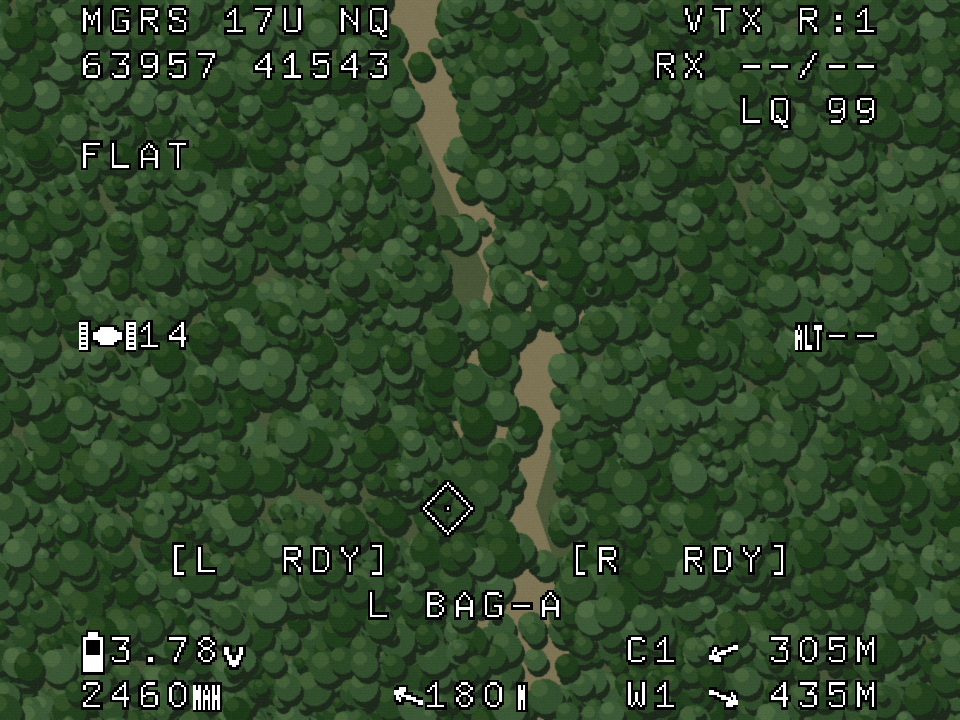

Authored report · Source / retained evidence in private GitHub repository ↗
World-down reference and GPS-height circle — 2026-11-04
Current use assumes a stationary vehicle at release. True CCIP and in-flight package prediction are outside the current scope. The downward diamond always marks world down, projected through the calibrated camera from roll/pitch. Both downward states use the same unit ray and position. Aircraft GPS altitude, the ground-height reference, speed and release timing never translate the diamond. At a fixed attitude, only the circle diameter changes with height. The gallery has separate altitude and roll/pitch controls.

Surface label and height
The only surface advisory is FLAT in both downward states. TER is reserved for an
implemented terrain backend actually using a valid height grid. There is no terrain
backend in this prototype, so no control can falsely select TER. CCIP ADVISORY,
DOWN and missing-height banners are absent.
height = aircraft GPS altitude - ground-reference GPS altitude
Both altitudes use the same datum. The default fixture is 330 m aircraft altitude minus
a 300 m captured reference, giving 30 m over the assumed plane. That height is shown at
middle right. Barometric altitude is ignored. A launch reference establishes one plane;
it does not follow slopes or canopy. Future TER needs valid grid coverage, datum and
source freshness; it must not move the world-down diamond either.
Unchecking GPS height/reference usable, a nonpositive height or an error interval
reaching the surface hides the circle and diameter label. The same diamond remains at
exactly the same XY, with middle-right height --. No stale point is held and no text
warning is introduced. Horizontal navigation has its separate validity assumption.

World-down projection
world ray = [0, 0, 1] in NED
camera ray = calibrated body/camera transform(world ray, roll, pitch)
diamond XY = project(camera ray)
The ray is a unit direction, not a vector to a finite ballistic endpoint. It is independent
of altitude and horizontal velocity. At roll −4° and pitch +15° the recorded native
position is (166, 203) at 10, 30, 60 and 120 m, including when the height reference is
unusable. Roll/pitch changes the projected position. The enlarged diamond has native
half-size 10, a centre dot and black outline; the fixed centre crosshair remains absent.
The preview's ±15° attitude sliders are demonstration ranges, not accepted flight limits.
Provisional circle scale
The circle remains a visual-development assumption for a stationary release. It is not a calibrated confidence region. There is no nominal forward speed, velocity-based XY shift, release-delay compensation or in-flight trajectory model. A scalar residual- drift allowance sizes the illustrative footprint; it does not claim that the aircraft is moving. True CCIP is deferred and is not being implemented in this revision.
flat-model.json contains the shared assumptions:
| Parameter | Assumed value |
|---|---|
| Release | Vehicle stationary |
| Ground reference | 300 m, same GPS datum |
| Error in GPS aircraft-minus-ground height | ±3 m |
| Residual drift allowance for circle scale | 0.50 m/s |
| Base surface-error allowance | 1.00 m |
| Surface | One horizontal plane |
Use a simple reference fall-time scale at the upper height allowance, h+dh:
allowance time = sqrt(2 * (h + dh) / g)
r = base allowance + residual drift allowance * allowance time
surface diameter = 2 * r
This is an assumed display budget for the stationary-release reference, with no wind, drag or package-specific fit. It is not a statistical probability or measured drop error.
Project a surface circle around (0, 0, h), directly below the aircraft, and enclose
its sampled boundary with a screen circle centred on the world-down diamond. Add a
2-pixel rounding margin. Native horizontal/vertical radii account for analog sampling
aspect; HUD cells interrupt the ring. D4.6M labels the default assumed surface diameter.
| GPS height over plane | Assumed surface diameter | Screen-circle diameter | Diamond native XY |
|---|---|---|---|
| 10 m | 3.6 m | 204 px | 166, 203 |
| 30 m | 4.6 m | 92 px | 166, 203 |
| 60 m | 5.6 m | 58 px | 166, 203 |
Surface metres and image pixels scale differently. The screen footprint can shrink with height while the assumed surface diameter grows. Background imagery stays fixed to isolate the symbol changes; this is not a physical flight simulation.
Sources: Python circle-scale model, image generator, and browser implementation. Static references call the actual C camera projector; browser cases use the same frozen lens coefficients. The manifest records altitude/error and attitude cases. Desktop canvases/masks are not MCU RAM allocations. C01–C03 retain their historical font, image bytes and source behaviour.
Current PCB memory boundary
ST specifies 128 KiB flash and 32 KiB SRAM for the STM32G431CB. The repository's linker script reserves 8 KiB flash for the bootloader, 4 KiB for settings and 16 bytes of shared RAM. It also reserves a 2 KiB stack.
Read-only inspection of the existing 0.1.0 (2f1e4f8) release ELF/map, built on 2026-11-03
at 16:19:04, gives the following. pcb-memory-budget.json records
the input hashes and exact values; this task performed no new firmware build.
| Region | Linked/reserved use | Remaining region bytes |
|---|---|---|
| Application flash: 118,784 B | 74,700 B image | 44,084 B, about 43.1 KiB |
| Usable RAM: 32,752 B | 20,336 B data/BSS + 2,048 B reserved stack | 10,368 B, about 10.1 KiB |
These are linker-region margins, not proven free runtime allocations. Stack high-water, render timing and new code/data still need measurement. The unused flash is not an allocated terrain partition and has no tile-loading/update contract.
For signed 16-bit height samples, excluding origins, spacing, datum and integrity metadata:
| Sample grid | Height bytes | Interpretation |
|---|---|---|
| 32 × 32 | 2,048 B | A small local tile is plausible, subject to a measured budget |
| 64 × 64 | 8,192 B | Consumes most of the current RAM margin |
| 128 × 128 | 32,768 B | Exceeds the whole usable RAM region before firmware data |
At 10 m spacing, 32 samples span 310 m between sample centres; 64 span 630 m. Coverage, resolution and metadata must be chosen together. Flash could potentially hold a small read-only tile, but the linker/update/storage design and firmware growth would need review.
The present flat-plane model needs only a ground-reference height and a small parameter set, with no height grid. For later terrain support, assess an FC/companion supplying local surface height or a small patch through telemetry before reserving broad map data on the OSD. Keep terrain ownership outside the video scanline path and benchmark the eventual bounded circle primitive on the PCB separately.
Verified in this prototype revision: twelve browser/C geometry cases with zero native position or screen-radius differences; height-control changes; missing GPS, invalid height and empty-error fallback to a diamond without a circle; datum-translation invariance; larger assumed GPS error growing the surface envelope; and preservation of all nine baseline PNGs. Desktop/mobile browser checks and all six existing host regressions passed. These are software/visual checks. The compact layout was swept at all 117 integer heights from 4–120 m with the default ±3 m height-error assumption. Enlarged diamond/outline bounds clear every HUD text cell; payload states/profile sit below the guidance area. This is not an accepted operating range.